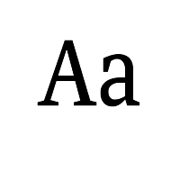
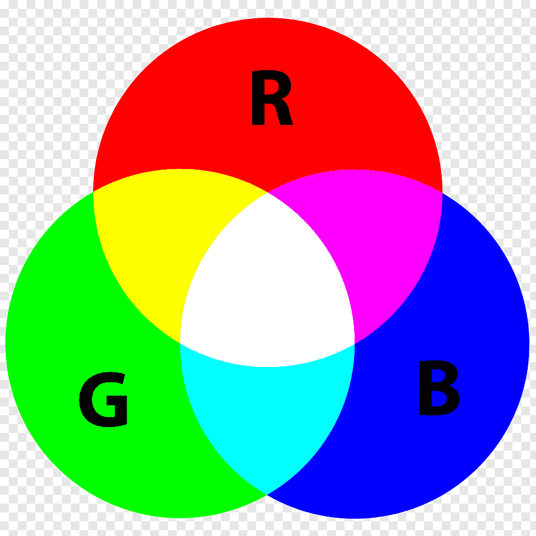

Úvod
Poèítaèová grafika je tvorba a úprava grafickıch objektù za
pomoci poèítaèe.
Grafickımi objekty mù�eme rozumìt napø. obrázky èi digitální
fotografie.
Tuèòák
Pixel (picture element)
Základní pojmy

Nejmenší jednotka rastrové grafiky, jeden zobrazovací
(grafickı) bod.
Logické pixely specifikují polohu bodù v obrázku.
Fyzické pixely pou�ívá k zobrazování vıstupní zaøízení, napø.
monitor (nìkolik malıch bodù vysvítí jeden pixel) nebo
tiskárna (velikost pixelu odpovídá velikosti kapièky inkoustu
nebo nìkolika zrnkùm tonerového prášku).
Barevná hloubka
Urèuje kolik bitù potøebujeme k popisu barvy jednoho bodu v obrázku.
Jinımi slovy urèuje jakı maximální mo�nı poèet barev mù�eme v obrázku pou�ít.
Barevné modely
Urèují, ze kterıch základních barev a v jakém pomìru se budou ostatní barvy míchat.
Podle zpùsobu míchání barev se dìlí na subtraktivní(základní barvy jsou odeèítány od bílé barvy a tím vznikají
barvy tmavší) a aditivní (základní barvy jsou pøidávány do èerné barvy a tím vzniká barva svìtlejší).
Model RGB
Základní pojmy

Pøíklad aditivního míchání barev, kde základní slo�ky jsou èervená (Red), zelená (Green) a modrá (Blue).
Tento barevnı model se pou�ívá napø. pøi zobrazování na monitoru.
Model CMY
Pøíklad subtraktivního míchání barev, kde základní slo�ky jsou azurová (Cyan), purpurová (Magenta) a �lutá (Yellow).
Tento barevnı model se pou�ívá pøevá�nì u tiskáren, kde se však pøidává èerná barva zvláš� jako doplòková cartridge,
èím� vzniká ètyøbarevnı tisk (model CMYK, kde K znamená Black).
Rozlišení
Rozlišení tisku u tiskáren znamená kolik bodù lze vytisknout
na jednotku vzdálenosti tj. hustota bodù (napø. 600 DPI ).
Rozlišení skenování u scannerù znamená kolik bodù na
jednotku vzdálenosti je scanner schopen pøeèíst.
Rozlišení monitoru nebo displeje je poèet pixelù , které mù�e
bıt zobrazeno na obrazovce (napø. 1024 × 768 bodù).
Jednotkou rozlišení je DPI (Dot Per Inch), co� znamená „bodù
na palec“.
Alternativní jednotka rozlišení je PPI (Pixel Per Inch), co�
znamená „pixelù na palec“.
Rozdìlení
Poèítaèová grafika se dìlí podle zpùsobu práce s obrázky, zpracování a ukládání obrazovıch informací do poèítaèe, na
rastrovou a vektorovou.
V rastrové grafice je obrázek popsán mno�inou bodù vytváøejících møí�ku.
Ve vektorové grafice je obrázek matematickım popisem nìkolika objektù, základem je køivka.